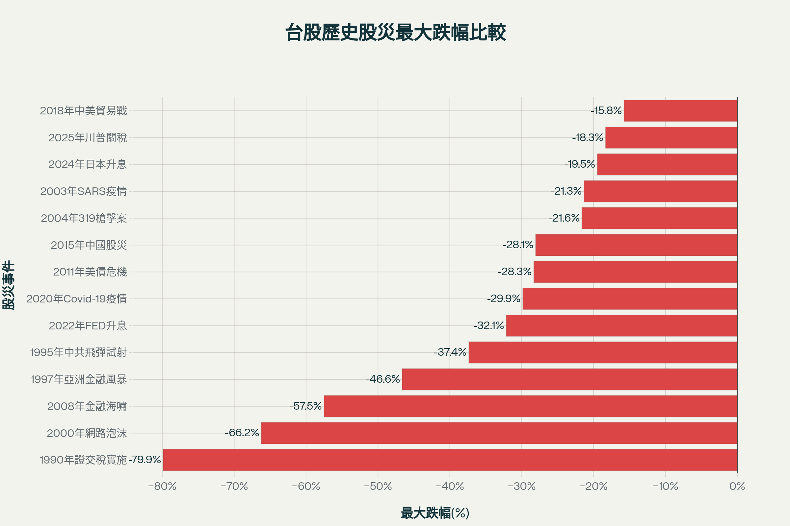
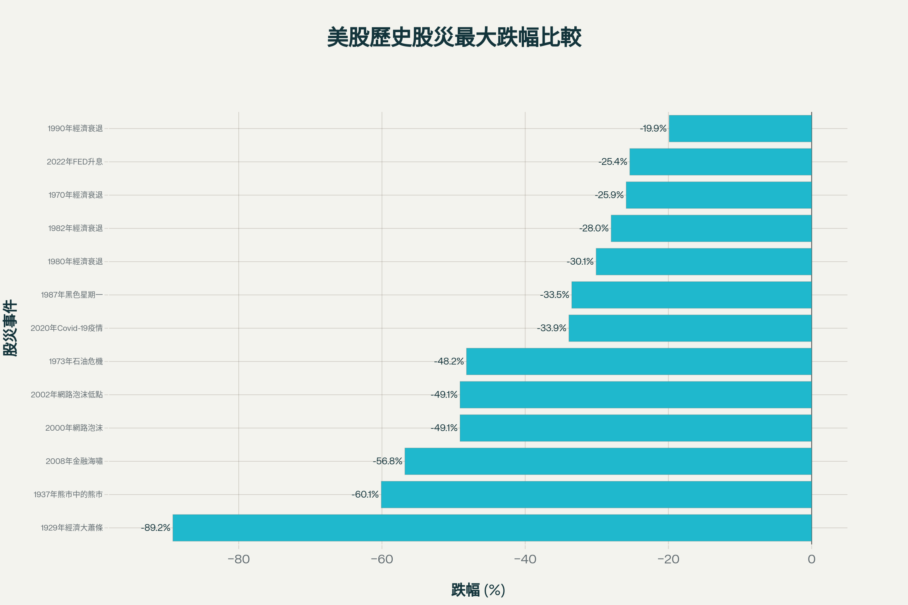

台股與美股歷史股災完整統計報告
本報告全面整理台灣加權指數與美國股市（道瓊指數及標普500指數）自1929年以來的重大股災事件，包含每次股災的發生時間、最高點與最低點日期、指數數值及最大回檔百分比。
台股歷史股災統計
台灣股市自1990年證交稅實施以來，經歷了14次重大股災事件。以下為完整的台股股災記錄:
1. 1990年證交稅實施
- 發生時間: 1990年2月12日
- 最低點日期: 1990年10月1日
- 指數變化: 12,682點 → 2,551點
- 最大跌幅: -79.88%
- 持續時間: 8個月（231天）
- 原因: 台灣經濟過熱後的修正，政府開始實施證交稅千分之六，投資人意識到股市已經過高
2. 1995年中共飛彈試射
- 發生時間: 1995年1月5日
- 最低點日期: 1995年8月15日
- 指數變化: 7,144點 → 4,474點
- 最大跌幅: -37.37%
- 持續時間: 7個月（222天）
- 原因: 台海關係緊張，中共在台海進行飛彈試射，戰爭危機造成投資人恐慌，外資紛紛撤離
3. 1997年亞洲金融風暴
- 發生時間: 1997年8月27日
- 最低點日期: 1999年2月5日
- 指數變化: 10,256點 → 5,474點
- 最大跌幅: -46.63%
- 持續時間: 18個月（527天）
- 原因: 泰國央行改變匯率政策導致泰銖大幅貶值，東南亞各國經濟崩潰，間接影響台灣貿易狀況
4. 2000年網路泡沫
- 發生時間: 2000年2月5日
- 最低點日期: 2001年9月20日
- 指數變化: 10,202點 → 3,446點
- 最大跌幅: -66.22%
- 持續時間: 19個月（593天）
- 原因: 網路公司估值過高，泡沫化破裂引起崩盤，持續近2年
5. 2003年SARS疫情
- 發生時間: 2003年1月24日
- 最低點日期: 2003年4月28日
- 指數變化: 5,141點 → 4,044點
- 最大跌幅: -21.34%
- 持續時間: 3個月（94天）
- 原因: 高死亡率的SARS爆發讓人陷入恐慌，短短10天跌了600點
6. 2004年319槍擊案
- 發生時間: 2004年3月19日
- 最低點日期: 2004年8月5日
- 指數變化: 6,833點 → 5,355點
- 最大跌幅: -21.63%
- 持續時間: 5個月（139天）
- 原因: 總統陳水扁遭槍擊，全台政治經濟陷入恐慌
7. 2008年金融海嘯
- 發生時間: 2008年5月20日
- 最低點日期: 2008年11月21日
- 指數變化: 9,309點 → 3,955點
- 最大跌幅: -57.51%
- 持續時間: 6個月（185天）
- 原因: 美國次級房貸崩潰，連帶影響台股。雷曼兄弟破產引發全球金融危機
8. 2011年美債危機
- 發生時間: 2011年2月8日
- 最低點日期: 2011年12月19日
- 指數變化: 9,220點 → 6,609點
- 最大跌幅: -28.32%
- 持續時間: 10個月（314天）
- 原因: 歐美債務問題影響全球股市，台股加權指數創近10年來最低點
9. 2015年中國股災
- 發生時間: 2015年4月28日
- 最低點日期: 2015年8月24日
- 指數變化: 10,014點 → 7,203點
- 最大跌幅: -28.07%
- 持續時間: 4個月（118天）
- 原因: 中國股市崩盤加上油價大跌，8月24日當天台股跌幅達7.49%
10. 2018年中美貿易戰
- 發生時間: 2018年10月2日
- 最低點日期: 2019年1月4日
- 指數變化: 11,064點 → 9,319點
- 最大跌幅: -15.77%
- 持續時間: 3個月（94天）
- 原因: 美國針對中國傾銷課高額關稅，市場恐慌，台灣科技業受美中雙方合作緊密影響
11. 2020年Covid-19疫情
- 發生時間: 2020年1月20日
- 最低點日期: 2020年3月19日
- 指數變化: 12,151點 → 8,523點
- 最大跌幅: -29.86%
- 持續時間: 2個月（59天）
- 原因: 新冠疫情開始在中國以外地區蔓延，沙烏地阿拉伯和俄羅斯石油生產分歧導致油價暴跌
12. 2022年FED升息
- 發生時間: 2022年1月5日
- 最低點日期: 2022年10月26日
- 指數變化: 18,619點 → 12,635點
- 最大跌幅: -32.14%
- 持續時間: 9個月（294天）
- 原因: 新冠疫情FED大量QE加上俄烏戰爭等因素導致通膨，FED需要升息抵制通膨
13. 2024年日本升息
- 發生時間: 2024年7月11日
- 最低點日期: 2024年8月6日
- 指數變化: 24,417點 → 19,663點
- 最大跌幅: -19.48%
- 持續時間: 1個月（26天）
- 原因: 日本央行宣布升息，導致套息交易資金紛紛撤離，台指期跌停10%，加權指數跌8.35%
14. 2025年川普關稅
- 發生時間: 2025年4月2日
- 最低點日期: 2025年4月9日
- 指數變化: 21,298點 → 17,392點
- 最大跌幅: -18.34%
- 持續時間: 0個月（7天）
- 原因: 川普對等關稅政策，台灣被課徵32%關稅，4月7日單日暴跌超過2,000點，超過1,700檔股票無量跌停

台股歷史股災最大跌幅比較圖，清楚呈現各次股災的嚴重程度
美股歷史股災統計
美國股市作為全球最大的資本市場，自1929年以來經歷了13次重大股災。以下為完整的美股股災記錄:
1. 1929年經濟大蕭條
- 發生時間: 1929年9月3日（10月28-29日黑色星期一、二）
- 最低點日期: 1932年7月8日
- 指數變化: 道瓊381.17點 → 41.22點
- 最大跌幅: -89.2%
- 持續時間: 34個月（1,039天）
- 漲回高點時間: 1954年9月（歷時25年）
- 原因: 投機及槓桿形成經濟泡沫，1920年代經濟繁榮後的崩盤，市場貸款總額超過美國流通貨幣總額
2. 1937年熊市中的熊市
- 發生時間: 1937年3月
- 最低點日期: 1942年4月28日
- 指數變化: 標普500 19.67點 → 7.84點
- 最大跌幅: -60.1%
- 持續時間: 61個月（1,884天）
- 漲回高點時間: 1946年4月（歷時9年2個月）
- 原因: 二次世界大戰開始，歐洲陷入大規模戰爭，日本在亞洲挑起戰火
3. 1970年經濟衰退
- 發生時間: 1970年1月
- 最低點日期: 1970年5月26日
- 指數變化: 標普500 93.46點 → 69.29點
- 最大跌幅: -25.9%
- 持續時間: 4個月（145天）
- 原因: 經濟衰退導致股市調整
4. 1973年石油危機
- 發生時間: 1973年1月11日
- 最低點日期: 1974年10月3日
- 指數變化: 標普500 120.24點 → 62.28點
- 最大跌幅: -48.2%
- 持續時間: 21個月（630天）
- 漲回高點時間: 1980年7月（歷時7年7個月）
- 原因: 經濟衰退、通膨、石油危機。原油價格從每桶2.7美元漲到13美元，美聯儲激進升息
5. 1980年經濟衰退
- 發生時間: 1980年1月
- 最低點日期: 1980年3月27日
- 指數變化: 標普500 140.52點 → 98.22點
- 最大跌幅: -30.1%
- 持續時間: 2個月（86天）
- 原因: 經濟衰退，美聯儲主席Paul Volcker實施激進貨幣政策對抗通膨
6. 1982年經濟衰退
- 發生時間: 1982年1月
- 最低點日期: 1982年8月12日
- 指數變化: 標普500 142.35點 → 102.42點
- 最大跌幅: -28.0%
- 持續時間: 7個月（223天）
- 原因: 經濟衰退，聯邦基金利率高達19%以上
7. 1987年黑色星期一
- 發生時間: 1987年10月19日
- 最低點日期: 1987年10月19日（當日）
- 指數變化: 標普500 336.77點 → 223.92點，道瓊單日暴跌22.62%
- 最大跌幅: -33.5%
- 持續時間: 單日暴跌
- 漲回高點時間: 1989年1月（歷時1年4個月）
- 原因: 經濟不看好、中東局勢緊張，程式交易加速跌勢形成惡性循環
8. 1990年經濟衰退
- 發生時間: 1990年7月16日
- 最低點日期: 1990年10月11日
- 指數變化: 標普500 368.95點 → 295.46點
- 最大跌幅: -19.9%
- 持續時間: 3個月（87天）
- 原因: 經濟衰退導致股市回調
9. 2000年網路泡沫
- 發生時間: 2000年9月
- 最低點日期: 2002年10月9日
- 指數變化: 標普500 1,527.46點 → 776.76點，納斯達克損失近80%市值
- 最大跌幅: -49.1%
- 持續時間: 25個月（768天）
- 漲回高點時間: 2007年5月（歷時6年9個月）
- 原因: 互聯網公司過度被炒作而泡沫，2000年4月14日納斯達克單日暴跌9.67%
10. 2008年金融海嘯（次貸危機）
- 發生時間: 2007年10月9日
- 最低點日期: 2009年3月9日
- 指數變化: 標普500 1,565.15點 → 676.53點
- 最大跌幅: -56.8%
- 持續時間: 17個月（517天）
- 漲回高點時間: 2013年1月（歷時5年2個月）
- 原因: 次級房貸泡沫破裂，雷曼兄弟破產，2008年11月20日標普創下752點低點
11. 2020年Covid-19疫情
- 發生時間: 2020年2月19日
- 最低點日期: 2020年3月23日
- 指數變化: 標普500 3,386.15點 → 2,237.40點
- 最大跌幅: -33.9%
- 持續時間: 1個月（33天）
- 漲回高點時間: 2020年6月3日（歷時90天）
- 原因: 新冠疫情帶來恐慌、石油價格暴跌。3月16日道瓊單日暴跌2,997點，創最大單日跌點
12. 2022年FED升息
- 發生時間: 2022年1月3日
- 最低點日期: 2022年10月13日
- 指數變化: 標普500 4,796.56點 → 3,577.03點
- 最大跌幅: -25.4%
- 持續時間: 9個月（283天）
- 原因: FED停止QE對抗通膨，2022年6月一口氣升息3碼，創2008年金融海嘯後最糟一年

美股歷史股災最大跌幅比較圖，展示百年來美國股市重大危機的跌幅
重要觀察與結論
台股股災特徵
- 最嚴重股災: 1990年證交稅實施導致跌幅達79.88%，幾乎回吐整個1980年代的漲幅
- 最長持續時間: 1997年亞洲金融風暴持續18個月，2000年網路泡沫持續19個月
- 最快速暴跌: 2025年川普關稅僅7天就暴跌18.34%，超過1,700檔股票無量跌停
- 近期趨勢: 2024-2025年連續兩年發生股災，反映全球金融市場波動加劇
美股股災特徵
- 最嚴重股災: 1929年經濟大蕭條跌幅達89.2%，需時25年才漲回高點
- 最長持續時間: 1937年熊市持續61個月，直到二戰結束才恢復
- 最快速恢復: 2020年Covid-19疫情僅90天就漲回高點，得益於各國大規模救市
- 平均跌幅: 美股歷史股災平均跌幅約42.2%，反映市場週期性調整的嚴重性
股災發生頻率
台股平均每2-3年會經歷一次較大回檔，美股則約每7-10年會出現一次重大股災。兩市場都顯示股災雖難以預測，但長期而言市場終將恢復並創新高。